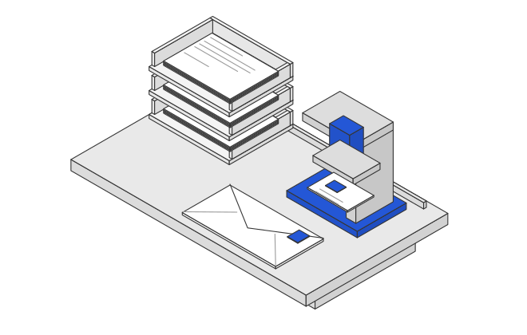
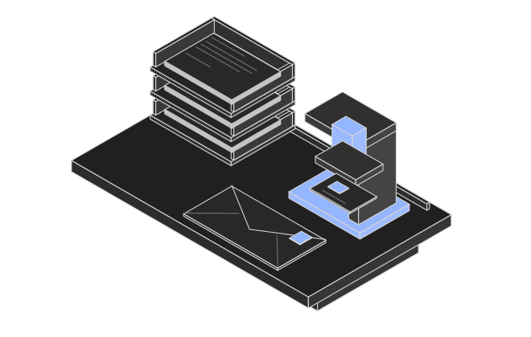

<!doctype html>
<html lang="en">
    <meta charset="utf-8" /><meta
        name="viewport"
        content="width=device-width,initial-scale=1" /><title>Postbot — isometric pilot</title
    ><style>
        * {
            box-sizing: border-box;
        }
        body {
            margin: 0;
            font: 16px/1.6 system-ui;
            background: #f4f4f4;
            color: #1c1c1c;
        }
        header {
            padding: 32px 5vw;
        }
        h1 {
            font-size: 22px;
            font-weight: 500;
            margin: 0;
        }
        p {
            font-size: 14px;
            color: #666;
            margin: 8px 0;
        }
        .studies {
            display: grid;
            grid-template-columns: 1fr 1fr;
        }
        .study {
            min-height: 420px;
            display: grid;
            place-items: center;
            padding: 40px 20px;
        }
        .study.dark {
            background: #171717;
        }
        .study img {
            width: 100%;
            max-width: 660px;
        }
        footer {
            padding: 24px 5vw;
            font-size: 13px;
            color: #666;
        }
        @media (max-width: 800px) {
            .studies {
                grid-template-columns: 1fr;
            }
            .study {
                min-height: 280px;
                padding: 24px 12px;
            }
        }
    </style>
    <header>
        <h1>Preparation & dispatch</h1>
        <p>Isometric pilot · fixed view · SVG · no animation</p>
    </header>
    <main class="studies">
        <div class="study">
            
        </div>
        <div class="study dark">
            
        </div>
    </main>
    <footer>Study for the illustration language. Not integrated into the homepage.</footer>
</html>
